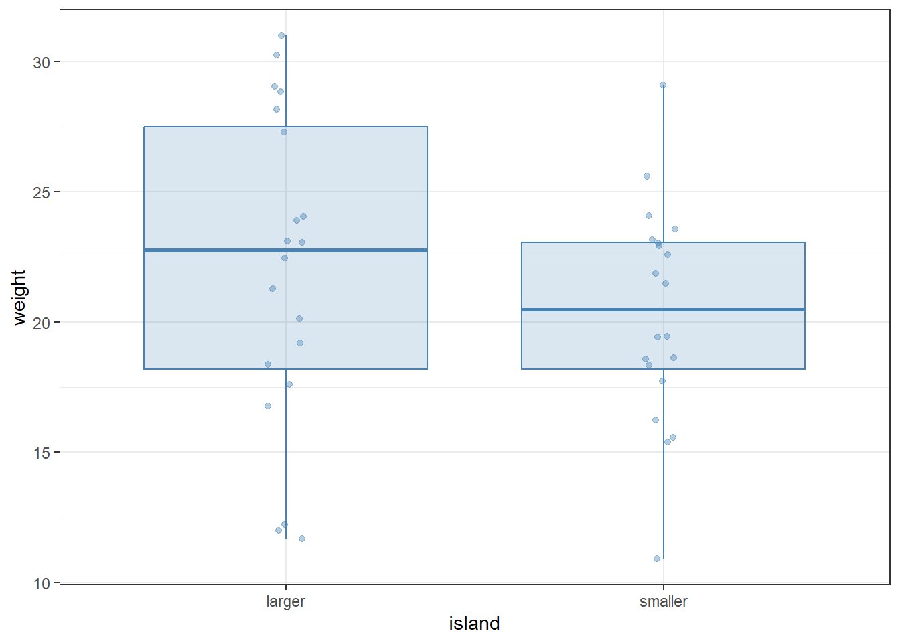
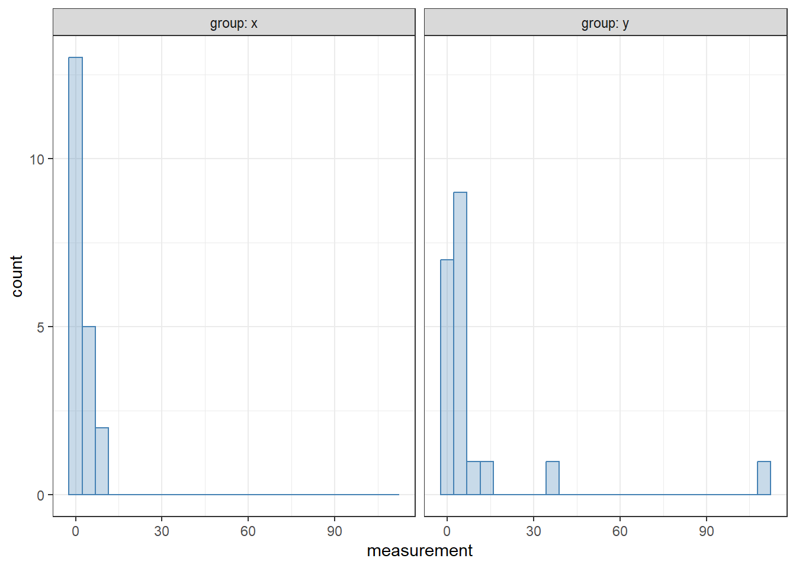

We do not have to limit ourselves to only making inference on one population or group. In fact most analyses that are conducted focus on comparing groups with one another in some capacity. In this chapter we will focus on the simplest of those comparisons, when we only have two groups.
14.1 Introductory example
To illustrate why statistical inference is needed in such comparisons, let us take a look at a fictive dataset (fictive_bird_example.csv) which contains equally fictive weight measurements of different bird individuals from the same species. The birds are assumed to come from two islands, a larger and a smaller one. The question is: do the data provide evidence of insular dwarfism—the phenomenon that the body sizes of species tend to decline on small islands over evolutionary time?
We can load the data:
library(tidyverse)bird <-read_csv("fictive_bird_example.csv")print(bird, n =Inf)
A quick visualization below looks promising, with individuals on the smaller island indeed appearing to be smaller:
bird |>ggplot(aes(x = island, y = weight)) +geom_boxplot(color ="steelblue", fill ="steelblue",alpha =0.2, outlier.shape =NA) +geom_jitter(alpha =0.4, width =0.05, color ="steelblue") +theme_bw()

Note
In the above plot, geom_jitter was used to display the actual data points that are summarized by the boxplots. The function geom_jitter is just like geom_point, except it adds a random sideways displacement to the data points, to reduce visual overlap between them. The width = 0.05 option restricts this convulsion of the points to a relatively narrow band. Since all data points are now displayed, it makes no sense to rely on the feature of box plots which explicitly draws points that are classified as outliers—their plotting is turned off by the outlier.shape = NA argument to geom_boxplot. It is a useful exercise to play around with these settings, to see what the effects of changing them are.
Furthermore, the computed difference between the means and medians of the two samples are also clearly different:
bird |>group_by(island) |>summarize(mean =mean(weight), median =median(weight)) |>ungroup()
# A tibble: 2 × 3
island mean median
<chr> <dbl> <dbl>
1 larger 22.0 22.8
2 smaller 20.4 20.5
Can we conclude that the two samples are indeed different, and birds on the smaller island tend to be smaller, supporting the insular dwarfism hypothesis? As mentioned above, the data are fictive—they are not based on actual measurements. In fact, these “observations” were created by sampling each data point from the same distribution, regardless of island: a normal distribution with mean 20 and standard deviation 5. This means that any supposedly observed difference between the samples must be accidental.
In Section 8.4 we looked at ways of visualizing two individual confidence intervals but determined that we did not take into account the variance between the groups properly to draw any statistical conclusions.
14.2 Parametric test
Let us wait no longer, and perform a statistical test. Instead of looking at two single groups of means we now look at the difference between them. Similar to the parametric test for a single mean there are several assumptions that must be fulfilled in order for us to find the results reliable.
independence within both samples,
can be fulfilled by using a Simple Random Sample (SRS).
independence between samples,
can as well be fulfilled by using one SRS for the entire data or one SRS per group and there is no inherent relationship between the data points in each group.
the sample mean, \(\bar{X}\), of each sample must be considered normally distributed,
can be fulfilled using the Central Limit Theorem (CLT) if the sample is sufficiently large, where the rule of thumb is \(n_1 > 30\) and \(n_2 > 30\). CLT states that a mean (or sum) of identically distributed variables will be approximately normally distributed in this case.
if the sample is small, then the variable of interest, \(X\), must be considered normally distributed. This means that the transformation applied to the mean will also be normally distributed.
Important
Suppose you want to study the effect of a specific fertilizer on the growth of a particular plant species. You could set up an experiment where you measure the height of the same group of plants before and after applying the fertilizer. In this case, the samples are dependent because the measurements are taken from the same plants at two different times, the height of the plant before the treatment is going to affect the height of the plant after the treatment.
This example does not fulfill the second assumption, even if the plants were to be selected using an SRS. We would have to use a statistical test for dependent samples which we will cover later in this chapter.
If all assumptions are fulfilled we could describe the parameter of interest as the difference between the two means: \[
\begin{aligned}
\bar{\mu}_1 - \bar{\mu}_2
\end{aligned}
\] where 1 and 2 denote the larger and smaller island respectively. To simplify things we could just use \(\bar{\mu}_L - \bar{\mu}_S\) to make it clear which mean corresponds to which group.
It does not matter which group we denote to which side of the difference, just that we remember the order and what evidence we expect to see that can falsify our null hypothesis. For example if we want to find evidence for the insular dwarfism theory we need to place the evidence of that theory in \(H_1\). This might feel a bit counter-intuitive to the process defined in Section 12.2 but there are two aspects to take into account;
we can only find evidence in support of an alternative hypothesis, never a null hypothesis, and
within statistics, the null hypothesis must always include the equal (\(=\)) sign.
We can find evidence of the insular dwarfism theory no matter if the difference is a really small or really big positive number1 — as long as there is a difference — so the evidence to support the theory would be defined in the alternative hypothesis as: \[
\begin{aligned}
&H_0: \bar{\mu}_L - \bar{\mu}_S \le 0\\
&H_1: \bar{\mu}_L - \bar{\mu}_S > 0
\end{aligned}
\]
The dataset is structured as a tidy data which means we can make use of formula notation in R to conduct the test of the difference. Using the tidy format, the function t.test() takes two arguments: a formula, and the data to be analyzed, in the form of a data frame or tibble. The formula in the first argument establishes a relationship between two (or more) columns of the data. We will discuss formulas and their syntax in more detail later.
For now: the way to write them is to first type the variable we wish to predict, then a tilde (~), and then the explanatory variable (predictor) by which the data are subdivided into the two groups. In our case, we are trying to explain the difference in weight between the islands, so weight comes before the tilde and the predictor island comes after. The default value to test for is 0, so we do not need to change that argument to conform to our hypotheses, but we need to set the one-sided \(H_1\) in alternative.
t.test(weight ~ island, data = bird, alternative ="greater")
Welch Two Sample t-test
data: weight by island
t = 0.99716, df = 33.742, p-value = 0.1629
alternative hypothesis: true difference in means between group larger and group smaller is greater than 0
95 percent confidence interval:
-1.139879 Inf
sample estimates:
mean in group larger mean in group smaller
22.0195 20.3820
Note
Make sure to note the order of the groups stated in the alternative hypothesis of the output. In this case it says “true difference in means between group larger and group smaller is greater than 0” which is what we defined in \(H_1\).
If the text is different from what we defined in our hypotheses, we must change the factor levels of the grouping variable in the data to the same order as we have set. We can do this by manually setting the order in the levels argument of factor().
Similar to the output from the one-sample t-test we can compare the p-value to the level of significance in order to determine if the null hypothesis can be rejected or not. In this example the p-value of 0.1629 is higher than the significance level of 0.05 which means we cannot reject \(H_0\). We then conclude that with 5% significance we have not found evidence in support of the insular dwarfism theory.2
14.2.1 Assumption of equal variance
When performing a two-sample t-test, we need to consider whether the variances of the two groups are equal or unequal. This decision impacts the test we use and the reliability of our results.
If we assume that the variances of the two groups are equal, we use a pooled variance. This assumption can simplify calculations and increase the power of the test if it holds true, however, if the variances are not equal, this assumption can lead to incorrect conclusions.
To perform a t-test with equal variances in R, we use the var.equal = TRUE argument in the t.test() function:
t.test(weight ~ island, data = bird, alternative ="greater", var.equal =TRUE)
Two Sample t-test
data: weight by island
t = 0.99716, df = 38, p-value = 0.1625
alternative hypothesis: true difference in means between group larger and group smaller is greater than 0
95 percent confidence interval:
-1.131123 Inf
sample estimates:
mean in group larger mean in group smaller
22.0195 20.3820
If we do not assume equal variances, we use Welch’s t-test, which adjusts the degrees of freedom to account for the difference in variances. This approach is more robust when the variances are indeed different between the two groups. To perform a t-test without assuming equal variances, we simply omit the var.equal argument or set it to FALSE which is the default.
We can use a visualization of the distribution for the two to approximate whether or not the variances are equal.
14.3 Non-parametric test
If the assumptions of the parametric tests — specifically the assumption of normality — cannot be fulfilled, we can instead choose to use a non-parametric alternative. One widely used test to check if two samples differ from one another is the Wilcoxon rank sum test (also known as the Mann-Whitney test). This test does not look at a specific parameter but rather the general idea of the measure of center, which is called the location.
Its implementation is as follows:
wilcox.test(weight ~ island, data = bird, alternative ="greater")
Wilcoxon rank sum exact test
data: weight by island
W = 237, p-value = 0.1636
alternative hypothesis: true location shift is greater than 0
Most of the output is not particularly relevant for us: we are first informed that a Wilcoxon rank sum exact test is being performed; then we see that we are explaining weight differences by island; then we see the test statistic W itself (we need not concern ourselves with its precise meaning); then the p-value; and finally, a reminder of what the alternative hypothesis is (the null hypothesis is that the shift in location is in fact zero).
We find that the p-value, given our data, is 0.1636. What this number means is that we have a roughly one-in-six chance that the observed difference is nothing but a fluke. Since science leans towards erring on the side of caution (i.e., we would rather miss out on making a discovery than falsely claim having seen an effect), this value is in general a bit too high for comfort. And indeed: since in this case we know that the data were generated by sampling from the same distribution, any distinctiveness between them is incidental.
Warning
In many subfields of science, it is standard practice to consider p-values falling below 0.05 as “significant” and those falling above as “non-significant”. Besides the fact that such a one-size-fits-all approach ought to be suspect even under the best of circumstances, a significance threshold of 0.05 is awfully permissive to errors. In fact, we should expect about one out of twenty (\(1 / 0.05\)) of all papers ever published which have reported \(p = 0.05\) to be wrong! Digging deeper into this issue reveals that the figure is possibly much worse—see, e.g., Colquhoun (2014).
One way to ameliorate the problem is to adopt a less exclusive and parochial view of p-values. Instead of having rigid significance thresholds, p-values can simply be reported as-is, and interpreted for what they are: the probability that the outcome is at least as extreme as observed, assuming that the null model holds. Treating this information as just another piece of the larger data puzzle is a first step towards avoiding the erroneous classification of random patterns as results.
We must keep in mind that we cannot use this when comparing p-values between different tests and determine which is “more significant”. This will become important in Chapter 17.
Apart from the p-value which measures whether the observed effect is likely to have been due to chance alone, another important piece of information is some measure of the effect size: how different are the two samples? We have already computed the means and medians; their differences across the islands provide one way of measuring this effect size. It is possible to add a calculation of the effect size, as well as the confidence intervals, to the Wilcoxon rank sum test. All one needs to do is pass conf.int = TRUE as an argument:
wilcox.test(weight ~ island, data = bird, conf.int =TRUE, alternative ="greater")
Wilcoxon rank sum exact test
data: weight by island
W = 237, p-value = 0.1636
alternative hypothesis: true location shift is greater than 0
95 percent confidence interval:
-1.02 Inf
sample estimates:
difference in location
1.53
As additional output, we now receive the 95% confidence interval, as well as the explicit difference between the “locations” of the two samples. (A small word of caution: this “difference in location” is neither the difference of the means nor the difference of the medians, but the median of the difference between samples from the two groups of data—feel free to check the help pages by typing ?wilcox.test for more details.) If he interval were to cover 0, the practical interpretation would be that it is difficult to rule out the possibility that the observed difference in location is just due to chance.
The default confidence level of 95% can be changed via the conf.level argument. For example, to use a 99% confidence interval instead:
wilcox.test(weight ~ island, data = bird, conf.int =TRUE, conf.level =0.99, alternative ="greater")
Wilcoxon rank sum exact test
data: weight by island
W = 237, p-value = 0.1636
alternative hypothesis: true location shift is greater than 0
99 percent confidence interval:
-2.54 Inf
sample estimates:
difference in location
1.53
14.4 Some general conclusions
The example of Section 14.1 illustrates two important general points.
First, instead of jumping into statistical tests, we started the analysis with qualitative and descriptive data exploration: we plotted the data, computed its means and medians, etc. This is almost always the correct way to go.3 To perform tests blindly, without visually exploring the data first, is rarely a good idea.
Second, we only performed the statistical test after we have made an effort to understand the data, and after setting clear expectations about what we might find. We knew, going into the test, that finding a difference between the two island samples was questionable. And indeed, the test revealed that such a distinction cannot be made in good conscience. Following a similar strategy for all statistical inference can prevent a lot of frustration. To make the point more sharply: do not perform a statistical test without an expectation of what its result will be! A more nuanced way of saying the same thing is that if you think you see a relationship in your data, then you should also make sure that your observation is not just a mirage, by using a statistical test. But if a relationship is not visually evident, you should first ask the question whether it makes much sense to try to explore it statistically.
In summary, the tests failed to yield serious evidence in favor of rejecting the null hypothesis. Therefore, we cannot claim with any confidence that our fictive birds have smaller sizes on the smaller island. While failure to reject the null is not the same as confirming that the null is true (absence of evidence is not evidence of absence!), the notion that the two samples are different could not be supported. In this particular case, since we ourselves have created the original data using the null hypothesis, we have the privilege of knowing that this is the truth. When working with real data, such knowledge is generally not available.
14.5 Parametric versus non-parametric tests
The Wilcoxon rank sum test we employed does not assume either the data or the residuals to come from any particular distribution. This is both the test’s advantage and disadvantage. It is an advantage because fewer assumptions must be satisfied for the test to be applicable. Non-parametric techniques also tend to fare better when only limited data are available. Since in many areas of biology (such as ecology) data are hard to come by, datasets are correspondingly small, making non-parametric techniques a natural candidate for interrogating the data with. On the downside, non-parametric tests tend to be less powerful than parametric ones: the additional assumptions of parametric tests may allow for sharper inference—provided that those assumptions are actually met by the real data, of course.
The conclusions drawn from both of these tests in the sections above were the same, but in other situations, the choice of test may matter more. The data in t_wilcox_example.csv have also been artificially created as an example. They contain two groups of “measurements”. In the first group (group x), the data have been sampled from a lognormal distribution with mean 0 and standard deviation 1. In the second group (group y), the data have been sampled from a lognormal distribution with mean 1 and standard deviation 1. Thus, we know a priori that the two distributions from which the samples were created have different means, and a statistical test may be able to reveal this difference. However, since the data are heavily non-normal, a t-test will struggle to do so. Let us load and visualize the data first:
example <-read_csv("t_wilcox_example.csv")example |>ggplot(aes(x = measurement)) +geom_histogram(bins =25, alpha =0.3,color ="steelblue", fill ="steelblue") +facet_wrap(~ group, labeller = label_both) +theme_bw()

Applying a t-test first:
t.test(measurement ~ group, data = example)
Welch Two Sample t-test
data: measurement by group
t = -1.4796, df = 19.622, p-value = 0.1549
alternative hypothesis: true difference in means between group x and group y is not equal to 0
95 percent confidence interval:
-19.853561 3.388384
sample estimates:
mean in group x mean in group y
2.33571 10.56830
The parametric t-test cannot detect a difference between the samples. The fact is, since its assumption of normality is violated, such a test should not have been attempted in the first place. By contrast, the non-parametric Wilcoxon rank sum test correctly suggests that there might be a difference:
wilcox.test(measurement ~ group, data = example, conf.int =TRUE)
Wilcoxon rank sum exact test
data: measurement by group
W = 106, p-value = 0.01031
alternative hypothesis: true location shift is not equal to 0
95 percent confidence interval:
-3.039534 -0.378063
sample estimates:
difference in location
-1.798516
The p-value of 0.01 means that there is a one-in-a-hundred probability that the observed difference is due only to chance.
14.6 Dependent samples
When dealing with dependent samples, the measurements are related in some way, such as repeated measurements on the same subjects. This dependency must be accounted for in the analysis.
The most common parametric test for dependent samples is the paired t-test. This test compares the means of two related groups to determine if there is a statistically significant difference between them. One additional assumption is that observations in the two groups can be paired together to create a paired difference that is analyzed similar to a one-sample test for the mean of the difference, \(\mu_d\).
In R we can no longer make use of the formula notation but must instead add the two groups of values if the argument paired = TRUE is used.
t.test(x = before, y = after, data = dataset, paired =TRUE)
When the assumptions of the paired t-test are not met, we can use a non-parametric test such as the Wilcoxon signed-rank test. This test does not assume normality and is used to compare the location differences between paired observations.
# Conducting a Wilcoxon signed-rank testwilcox.test(x = before, y = after, data = dataset, paired =TRUE)
14.7 Statistical tests in a data analysis pipeline: The underscore notation
One natural question is whether statistical tests can be included in a data analysis pipeline. The answer is yes, but not without having to consider some complications that are due to historical accidents. Attempting the following results in an error:
bird |>wilcox.test(weight ~ island, conf.int =TRUE)
Error in wilcox.test.default(bird, weight ~ island, conf.int = TRUE): 'x' must be numeric
The reason for the error is in how the pipe operator |> works: it substitutes the expression on the left of the pipe into the first argument of the expression on the right. This works splendidly with functions of the tidyverse, since these are designed to always take the data as their first argument. However, a quick glance at the documentation of both wilcox.test and t.test (neither of which are tidyverse functions) reveals that they take the data as their second argument, with the formula coming first. A naive application of the pipe operator, like above, will therefore fail.
Fortunately, there is a way to work around this. One may use the underscore (_) in an expression to stand for whatever was being piped into it. The following will therefore work:
bird |>wilcox.test(weight ~ island, data = _, conf.int =TRUE)
Wilcoxon rank sum exact test
data: weight by island
W = 237, p-value = 0.3273
alternative hypothesis: true location shift is not equal to 0
95 percent confidence interval:
-1.70 5.43
sample estimates:
difference in location
1.53
The underscore stands for the object being piped in—which, in our case, is simply the tibble bird. The data = _ argument therefore evaluates to data = bird.
This almost concludes all there is to using the underscore notation, except there are three subtleties involved. The first is a simple rule: the underscore must always be used in conjunction with a named argument. So in the above piece of code, writing wilcox.test(weight ~ island, _, conf.int = TRUE) will fail—the argument name must be written out, as data = _. Second, the underscore can only appear at most once in a function call. And third, using the underscore overrides the default behavior of silently substituting the data as the first argument to the function on the right of the pipe. That is, if one uses the underscore, then the data on the left of the pipe will be substituted only where the underscore is.
Note
In case you are using the magrittr pipe %>% instead of the built-in pipe |>, you can observe all of the rules above, except you should replace the underscore by a dot (.). So
bird |>wilcox.test(weight ~ island, data = _, conf.int =TRUE)
can be equivalently rewritten as
bird %>%wilcox.test(weight ~ island, data = ., conf.int =TRUE)
There are other subtle differences in how %>% works compared with |>; you can look at the help pages of both (?`%>%`, resp. ?`|>`) for a more thorough explanation.
14.8 Exercises
Atmospheric ozone levels are important for urban gardens, because ozone concentrations above 80 parts per hundred million can damage lettuce plants. The file ozone.csv contains measured ozone concentrations in gardens distributed around a city. The gardens were either east or west of the city center. Is there a difference in average ozone concentration between eastern vs. western gardens? Create a plot of the concentrations first and try to guess the answer, before performing any statistical analyses. Then do the statistics, using both nonparametric and parametric methods. What result do you find? Do the outcomes of the different methods agree with one another?
In the built-in iris dataset, the sepal and petal characteristics of the various species differ. Let us focus on just petal length here. Is there a detectable difference between the petal lengths of Iris versicolor and I. virginica? (Since we are not working with I. setosa in this exercise, make sure to remove them from the data first—e.g., by using filter.) Like before, start with a graph which you can base a hypothesis on. Then perform both nonparametric and parametric tests to see if your hypothesis can be supported.
Repeat the above exercise for any and all of the possible trait-species pair combinations in the iris dataset. E.g., one can compare the sepal widths of I. setosa and I. virginica, or the petal widths of I. versicolor and I. setosa, and so on.
Colquhoun, David. 2014. “An investigation of the false discovery rate and the misinterpretation of p-values.”Royal Society Open Science 1 (3): 140216. https://doi.org/10.1098/rsos.140216.
Remember that the theory says the sizes are smaller on a smaller island!↩︎
In this case we know that it is true given we created the sample ourselves.↩︎
The exception is when one analyzes data from a pre-registered experimental design. In that case, one must follow whatever statistical techniques were agreed upon before data collection even started.↩︎